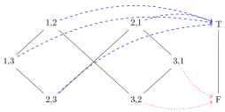
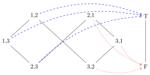

Person Case Constraints
- tuples (basics, crossproduct)
Monotonicity can be successfully invoked to explain \(^*\)ABA effects for adjectival gradation and person syncretism in pronouns, as well as case syncretism patterns. But languages do many other quirky things, and one particularly quirky thing is the Person Case Constraint, short PCC.
The PCC explained
The PCC is a restriction on clitics. A clitic is a reduced pronoun that has attached to another word. For instance, the English pronoun her is often realized as a clitic ’er, as in I saw’er yesterday.
Can you think of other clitics in English? Exemplify their use with specific sentences.
English does not allow combinations of clitics like I showed’er’em. Other languages do, but usually not all combinations are okay. That’s what the PCC is about: if two pronouns belong to the same verb, the pronouns must have certain person values. An example of the PCC can be seen in certain dialects of French. The sentence Roger me leur a présenté ‘Roger has shown me to them’ is ungrammatical. But the minimally different Roger le leur a présenté ‘Rogers has shown him to them’ is perfectly fine. In these dialects, it is alright to combine
- a third person direct object pronoun with a third person indirect object pronoun,
but not
- a first person direct object pronoun with a third person indirect object pronoun.
A variety of PCCs have been found across languages, including French, Spanish, Catalan, Basque, Slovenian, and most recently Choctaw, a Native American language spoken in parts of Oklahoma, Mississippi, Louisiana, and Tennessee. Four PCCs are robustly attested at this point. Using 1/2/3 as a shorthand for first/second/third person and DO/IO as abbreviations for direct and indirect object, they are usually defined as follows:
- S(trong)-PCC: DO must be 3.
- U(ltrastrong)-PCC: DO is strictly less prominent than IO, where 3 is less prominent than 2, and 2 is less prominent than 1.
- W(eak)-PCC: 3IO combines only with 3DO.
- M(e first)-PCC: If IO is 2 or 3, then DO is not 1.
That is, to be frank, a mess. The attested PCCs look like a random collection of conditions — if there is anything principled going on it must be well-hidden. Or maybe not. The four PCCs above are actually yet another instance of monotonicity.
PCCs as tables
First, let’s summarize the facts above in a more accessible format. Each PCC can be represented by a table where the rows indicate the person specification of IO and the columns the person specification of DO. For example, the U-PCC has the following table:
- U(ltrastrong)-PCC: DO is strictly less prominent than IO, where 3 is less prominent than 2, and 2 is less prominent than 1.
| \(\downarrow\)IO/DO\(\rightarrow\) | 1 | 2 | 3 |
|---|---|---|---|
| 1 | - | Y | Y |
| 2 | N | - | Y |
| 3 | N | N | - |
Note that we leave the diagonal empty. This is because combinations of the IO and DO with the same person often display special behavior that linguists believe to be due to other factors that have nothing to do with PCCs. By keeping the diagonal empty, we effectively factor out these special situations to focus on only those that are free of such confounds.
When viewed as a table, the S-PCC only differs from the U-PCC in that the combination of 1IO and 2DO is forbidden (so in a sense the strong PCC is stronger than the ultrastrong PCC — don’t ask me why they are named the way they are).
- S(trong)-PCC: DO must be 3.
| \(\downarrow\)IO/DO\(\rightarrow\) | 1 | 2 | 3 |
|---|---|---|---|
| 1 | - | N | Y |
| 2 | N | - | Y |
| 3 | N | N | - |
The W-PCC, on the other hand, is indeed weaker than the U-PCC in that it allows for more combinations.
- W(eak)-PCC: 3IO combines only with 3DO.
| \(\downarrow\)IO/DO\(\rightarrow\) | 1 | 2 | 3 |
|---|---|---|---|
| 1 | - | Y | Y |
| 2 | Y | - | Y |
| 3 | N | N | - |
Add the corresponding table for the M-PCC.
A hierarchy for PCCs
First attempt
If PCCs are an instance of monotonicity in some sense, then we once again need a hierarchy of the involved elements. The PCC is a restriction on person combinations, and we already have \(1 < 2 < 3\) as our person hierarchy. But what are we supposed to do with this? In contrast to person syncretism, the PCC doesn’t care about individual person values, it cares about their combinations.
We can represent the combination of two person features \(x\) and \(y\) as a pair \(\left \langle x, y \right \rangle\). As a convention, the first component of the pair will indicate the row in the corresponding table, the second the column. So the pairs first give the IO person, then the DO person.
The combination of 3IO and 1DO is \(\left \langle 3,1 \right \rangle\). The pair \(\left \langle 1,3 \right \rangle\), on the other hand, represents the combination of 1IO and 3DO.
Translate between IO/DO notation and pairs.
- 2IO, 1DO
- \(\left \langle 1,2 \right \rangle\)
- \(\left \langle 3,3 \right \rangle\)
- 2DO, 1IO
Using pairs, we now have \(3 \times 3 = 9\) distinct elements to order.
- \(\left \langle 1,1 \right \rangle\)
- \(\left \langle 1,2 \right \rangle\)
- \(\left \langle 1,3 \right \rangle\)
- \(\left \langle 2,1 \right \rangle\)
- \(\left \langle 2,2 \right \rangle\)
- \(\left \langle 2,3 \right \rangle\)
- \(\left \langle 3,1 \right \rangle\)
- \(\left \langle 3,2 \right \rangle\)
- \(\left \langle 3,3 \right \rangle\)
The pairs with identical components represent elements along the diagonal and thus aren’t of importance to us. But we will still include them for now. The question is how do we sort these 9 elements into a hierarchy?
Ideally, our answer should be based on the existing person hierarchy \(1 < 2 < 3\). This is actually fairly easy. Given a set \(S\) ordered by some relation \(R\), one can order pairs over this set by extending the order pointwise. That is to say, \(\left \langle u,v \right \rangle \mathrel{R} \left \langle x,y \right \rangle\) iff both \(u \mathrel{R} x\) and \(v \mathrel{R} y\) hold. We are defining the order of the tuples in terms of the order between their components.
When the person hierarchy is extended in a pointwise fashion, \(\left \langle 2,1 \right \rangle < \left \langle 3,3 \right \rangle\) because \(2 < 3\) and \(1 < 3\). Similarly, \(\left \langle 2,1 \right \rangle < \left \langle 3,1 \right \rangle\) because \(2 < 3\) and \(1 = 1\), and \(\left \langle 1,2 \right \rangle < \left \langle 1,3 \right \rangle\) because \(1 = 1\) and \(2 < 3\). On the other hand, \(\left \langle 2,1 \right \rangle\) and \(\left \langle 1,3 \right \rangle\) are unordered with respect to each other because \(2 > 1\) and \(1 < 3\).
Fill each gap with \(<\), \(>\), or \(=\) as appropriate. If none of the three fit, leave the gap empty.
- \(\left \langle 3,3 \right \rangle \_ \left \langle 2,2 \right \rangle\)
- \(\left \langle 2,3 \right \rangle \_ \left \langle 2,2 \right \rangle\)
- \(\left \langle 3,2 \right \rangle \_ \left \langle 2,2 \right \rangle\)
- \(\left \langle 2,2 \right \rangle \_ \left \langle 2,2 \right \rangle\)
- \(\left \langle 1,2 \right \rangle \_ \left \langle 3,1 \right \rangle\)
Extending \(1 < 2 < 3\) in this pointwise fashion yields the hierarchy below.
For clarity, let’s remove all elements where IO and DO are the same, as we have already excluded them from the PCC.
Now that we have a hierarchy, we can formulate the following hypothesis: every PCC is a monotonically increasing map from the person-person hierarchy. But a map to what? Well, PCCs either permit a combination, or forbid it. We can represent this by True (T) for allowed, and False (F) for forbidden.
The U-PCC allows 1IO-2DO but not 2IO-1DO. We can view it as a function \(f\) such that \(f(\left \langle 1,2 \right \rangle) = T\) and \(f(\left \langle 2,1 \right \rangle) = F\).
Write down the 6 values of \(f\) for the W-PCC.
The set \(\left \{ \text{T}, \text{F} \right \}\) is ordered such that \(\text{F} < \text{T}\). The opposite ordering would work just as well, but it is rarely seen because F is usually identified with 0 and T with 1, and we have \(0 < 1\), not \(1 < 0\). As a picture:
This structure is commonly referred to as 2 (it has only two values, after all). So now we can ask whether PCCs are monotonically increasing maps from the person-person hierarchy to 2. At least for the W-PCC, this is indeed the case.

For the W-PCC, there are no two pairs \(x\) and \(y\) such that \(x \leq y\) without \(f(x) \leq f(y)\). It is indeed a monotonically increasing mapping from person combinations to True/False.
But things don’t quite work the way they should. The U-PCC, for instance, is not monotonically increasing.

Pick two pairs \(x\) and \(y\) and use them to show that the U-PCC is not a monotonically increasing map.
Hint: What’s the main difference between the W-PCC and the U-PCC?
Continuing the previous exercise, show that the U-PCC isn’t a monotonically decreasing map either.
Hmm, looks like not every PCC variant is a monotonic map from our person hierarchy to 2. Back to the drawing board!
A minor fix: Reversal
If you look at the PCC tables at the beginning of this notebook, you’ll notice that grammaticality seems to spread from the top-right corner towards the bottom-left. The difference between these PCCs is how far grammaticality gets to spread in each direction. The top-right corner, however, is the well-formed starting point for all PCC variants. This should be the starting point of our hierarchy, then, and its lowest point should be the bottom-left corner. But the top-right corner corresponds to \(\left \langle 1,3 \right \rangle\), whereas our person-person hierarchy starts with \(\left \langle 1,1 \right \rangle\). Similarly, our hierarchy bottoms out at \(\left \langle 3,3 \right \rangle\), whereas the bottom-left corner of the table is \(\left \langle 3,1 \right \rangle\). This suggests a somewhat unintuitive fix: use the reversed person hierarchy for the second component.
Given an ordering relation \(R\), its inverse \(R^{-1}\) is the result of literally reversing the order. So if \(x\) is related to \(y\) via \(R\) (formally, \(x \mathrel{R} y\)), then \(y\) is related to \(x\) via \(R^{-1}\) (\(y \mathrel{R^{-1}} x\)). The reverse of \(1 < 2 < 3\) is \(3 < 2 < 1\). Let us use \(\prec\) for this reversed order to clearly separate it from \(<\). Then we have \(1 < 2 < 3\) but \(3 \prec 2 \prec 1\). Whereas before we used \(<\) for both the first and the second component of the IO-DO pairs, we will now use \(<\) for the first component and \(\prec\) for the second.
- First component hierarchy: \(1 < 2 < 3\)
- Second component hierarchy: \(3 \prec 2 \prec 1\)
We will also use \(\triangleleft\) for the order in the person-person hierarchy, just to keep the three relations visually separated. In the pointwise definition, we now use \(<\) for the first component and \(\prec\) for the second. So \(\left \langle u,v \right \rangle \triangleleft \left \langle x,y \right \rangle\) iff both of the following hold:
- \(u < x\) or \(u = x\), and
- \(v \prec y\) or \(v = y\).
With this revised definition, we have \(\left \langle 2,3 \right \rangle \triangleleft \left \langle 3,1 \right \rangle\) because \(2 < 3\) and \(3 \prec 1\). But for the very same reason, \(\left \langle 2,1 \right \rangle\) and \(\left \langle 3,3 \right \rangle\) are unordered with respect to each other.
Fill each gap with \(\triangleleft\), \(\triangleright\), or \(=\) as appropriate. If none of the three fit, leave the gap empty.
- \(\left \langle 3,3 \right \rangle \_ \left \langle 2,2 \right \rangle\)
- \(\left \langle 2,3 \right \rangle \_ \left \langle 2,2 \right \rangle\)
- \(\left \langle 3,2 \right \rangle \_ \left \langle 2,2 \right \rangle\)
- \(\left \langle 2,2 \right \rangle \_ \left \langle 2,2 \right \rangle\)
- \(\left \langle 1,2 \right \rangle \_ \left \langle 3,1 \right \rangle\)
This exercise is only for those who have already delved deep into the background sections: Explain why \(\triangleleft\) is a weak partial order.
Hint: Remember the three properties that each weak partial order must satisfy, and explain for each one why it holds.
The full person-person hierarchy now looks a bit different, although the overall geometry stays the same.
And after removal of the irrelevant pairs, we get the following:
Over this hierarchy, both the W-PCC and the U-PCC are monotonically increasing maps. This is illustrated in the figures below. For simplicity, boxes are used to indicate that a combination is mapped to T. Nodes without boxes around them are mapped to F.
Redraw the figures above with arrows pointing towards T and F as we did earlier on in this unit. Confirm for yourself that this is indeed a monotonically increasing map.
Draw the corresponding pictures (with boxes instead of arrows) for the S(trong)-PCC and the M(e first)-PCC.
Summary
Where are we at this point? Well, all the attested types of PCCs are monotonically increasing maps over a specific person-person hierarchy. So PCCs, which looked truly befuddling at the beginning of this section, have turned out to be just another instance of monotonicity in language. This is a significant success because the PCC operates at the interface of morphology (word structure) and syntax (sentence structure). Monotonicity really seems to be interwoven into various subareas of language: morphology (syncretism in person pronoun systems, adjectival gradation, and case marking), the interface of morphology and syntax (PCC), and the interface of syntax and meaning (NPI-licensing).
Note that these are all very different phenomena, and linguists use very different pieces of machinery to model and analyze them. At the usual level of linguistic description, there seems to be no unifying force that ties them all together. But our more abstract, mathematical view can identify monotonicity as the central condition, with variation stemming solely from differences in the structures that monotonicity applies to.
The monotonicity account is not perfect, of course. Often there are additional principles that need to be put in place. For instance, adjectival gradation never displays AAB patterns of the form good-gooder-best, even though those are monotonic. Similarly, our revised person-person hierarchy allows for a few monotonic mappings that do not correspond to attested PCCs.
Give two examples of functions from the revised person-person hierarchy to 2 (i.e. the True/False structure) that are monotonic but not one of the four PCCs. You can represent them in the pictorial format used above.
Monotonicity, then, does not tell the whole story; for each domain there are additional factors to take into consideration. But monotonicity is sufficient to carve out a broad range of options that need to be whittled down a bit by additional restrictions. It is truly remarkable how much linguistic work can be done by such a simple mathematical concept.